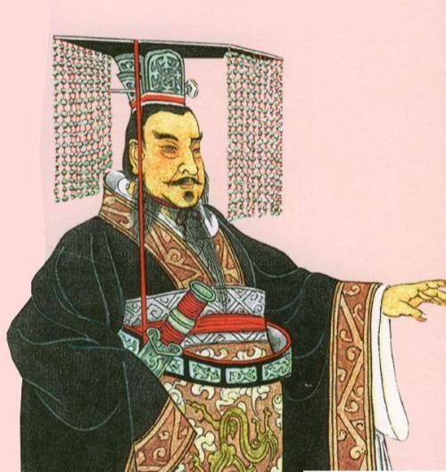
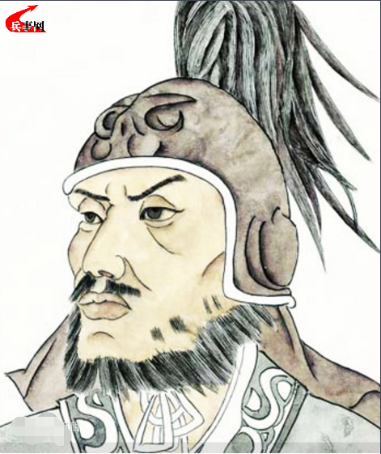
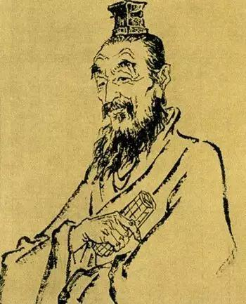
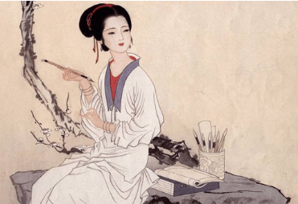
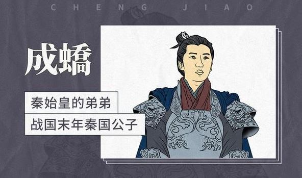
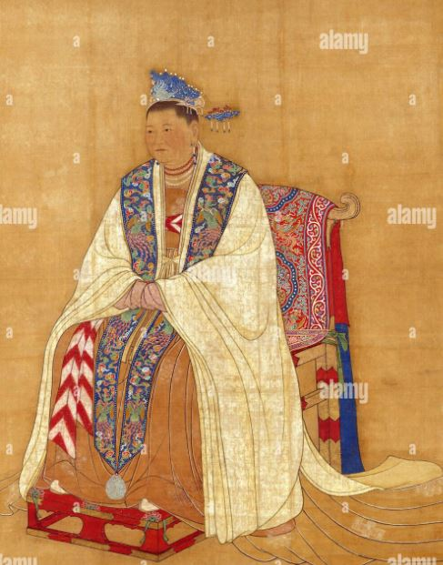

嬴政即位与晋阳叛乱平定 | 吕不韦的影响与门客文化 | 外戚势力 | 成蟜叛变 | 嫪毐之乱 | 吕不韦失势 | 扫清内部威胁 | 嬴政的政治手段
嬴政即位与晋阳叛乱平定
嬴政即位后，面对的是一个内外压力交织的局面。秦庄襄王去世时，嬴政年仅13岁，面对复杂的国内外环境，实际政权由相国吕不韦掌控。即位的同年，晋阳发生叛乱，迅速被秦将蒙骜平定，这显示了嬴政政权对国内不稳定因素的强硬应对态度。与此同时，嬴政尊称吕不韦为“仲父”，让其主持国政。这种安排既是对吕不韦权力的确认，也体现了嬴政对自身统治基础尚未完全稳固的清醒认识。

秦庄襄王

秦将蒙骜

吕不韦
吕不韦的影响与门客文化
在战国晚期，各诸侯国贵族往往通过养士来巩固政治地位。吕不韦为巩固自己的权力地位，大力招揽门客，门下食客一度达三千人，形成了自己的政治派系。这种做法类似于战国四公子（魏国信陵君、赵国平原君、齐国孟尝君和楚国春申君），进一步巩固了吕不韦在秦国的地位。吕不韦还主导编撰了《吕氏春秋》，这是他试图通过思想和文化手段影响秦国决策的重要举措。
外戚势力与嬴政初期的权力斗争
嬴政即位初期，秦国政局在很大程度上被外戚势力控制。历史学者认为，当时的秦国主要由三大外戚势力掌控，分别是嬴政的养祖母华阳夫人为代表的楚系外戚、嬴政祖母夏姬为代表的韩系外戚以及嬴政生母赵姬为代表的赵系外戚。这三大外戚势力相互倾轧，深刻影响了嬴政即位初期的政治局面。其中，赵系外戚因赵姬与吕不韦的复杂关系而成为秦国政坛的重要力量。

夏姬
成蟜叛变与内部权力矛盾
公元前239年，嬴政命其弟成蟜率军攻打赵国，但成蟜在屯留叛秦降赵。秦军随后攻占屯留，成蟜的部下被斩首处死，屯留的百姓被流放。关于成蟜叛变的原因，部分学者认为可能与韩系外戚夏姬去世后，赵系外戚借机清除韩系势力有关。成蟜的叛变不仅反映了秦国内部复杂的家族政治斗争，也体现出当时嬴政在面对家族内部矛盾时的应对策略。

成蟜
嫪毐之乱与赵姬的影响
嫪毐之乱是嬴政早期生涯中最严重的一次宫廷政变。嫪毐原本是吕不韦安排在赵姬身边的侍宦，但因特殊才能深得赵姬宠爱，并与赵姬生下两子。随着嬴政逐渐成年，嫪毐与赵姬试图通过政变推翻嬴政，企图立其私生子为秦王。然而，政变很快被平定，嫪毐被处以车裂之刑，三族被灭，赵姬则被囚禁。此事件不仅彻底瓦解了赵系外戚的影响，也使嬴政开始加强对宫廷和政权的直接控制。

赵姬
吕不韦失势与政治清洗
嫪毐叛乱牵连了吕不韦，尽管吕不韦曾帮助嬴政的父亲登上秦王之位，有立功之劳，但嬴政对吕不韦逐渐失去信任。公元前237年，嬴政以失职为名罢免吕不韦的相国职务，并将其流放。虽然吕不韦仍有相当的影响力，但嬴政最终通过赐毒酒的方式逼其自杀。这一事件标志着嬴政彻底摆脱了幼年时期的政治牵制，独揽大权。
扫清内部威胁与独揽大权
在吕不韦和嫪毐相继失势后，嬴政开始全面掌控秦国政局。他对吕不韦的旧部采取了严厉的清洗措施，并警告朝臣不准再有类似行为。通过这一系列政治斗争，嬴政逐步扫清了内外部对其权位的威胁，奠定了其独揽大权的基础
嬴政的政治手段与统一愿景
嬴政通过一系列复杂的政治斗争，展现了其卓越的政治手腕和权谋。他在清除异己的同时，也开始逐步将秦国的军事、经济和文化力量整合，为统一六国做好准备。这一时期的嬴政不仅展示了强大的个人能力，也为他日后统一中国打下了坚实的基础。
嬴政从年幼即位，到逐步扫清内外部威胁，其早期生涯充满了复杂的权力斗争和家族矛盾。他凭借坚定的意志和高超的政治手腕，最终成功实现了对秦国的全面掌控。这些经历不仅是嬴政个人成长的关键，也为他后来统一六国、建立中央集权的秦朝奠定了重要基础。通过这些政治斗争，嬴政逐渐成为一个成熟的政治家，展现了其历史功绩的伟大一面。